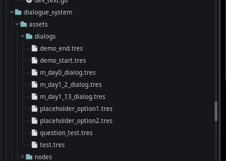

Module: dialogue_system
Documentation last edited: October 22, 2025 at 10:46 UTC
Description
Dialogue system for this game. Doesn't provide any kind of UI, but it does make it possible to create dialog graphs in
"res://modules/dialogue_system/assets/scenes/dialog_creator.tscn"
scene. You can also simply change location to
"dialog_editor"
and it will allow you to access it too.
Dialog Graph Editor

A simple graph editing interface to make dialogs. Interface is simple overall, and it was one of the first tools ever written for this game at the start of development, when i had not much clue on how to work with UI. Therefore it is missing some functionality AND is practicing eldritch fucking horror practices. But it works, so...
Loading existing files
Firstly - to load an existing dialog file that have been saved one day, you need a name of that damn dialog file. You can find all saved dialog files here:
"res://modules/dialogue_system/assets/dialogs/"

In a text field above "Load" button you simply enter the name and press "Load". When you are done editing - press "Save".
Nodes order
While you can potentially just connect anything with everything as you wish, it may not work correctly, so keep in mind, there's following pattern:
Start ->
Answer
Answer ->
Choice
Choice ->
Option -- or -- Multiple Options
Option ->
Answer
Option ->
Ending
Nodes can be used for cyclic connections, aka you can ask a question and go back to a "Choice" node that provided you that option.
Nodes purpose
Start - The starting point in a dialog graph. Connects to Answer to start a conversation
Answer - Answer of other person in dialog, not player. Connects to Choice to provide player options.
Choice - A relay-like node that connects multiple Options.
Option - Player's response that either leads to an Answer or Ending
Ending - The dialog graph's ending! Emits an event that can be handled in a
Dialog Script
Dialog Script
Dialog scripts are special kind of scripts made to "react" to an ending of a dialog. All of them are stored in
"res://locations/scenes/dialog_logic/"
.
# Dialog logic template
extends DialogLogicBase
func on_end(event_name):
match event_name:
"ending0":
# ...
"ending1":
# ...
It's basically about running code that'd react to a specified ending. Ending name is entered in "Ending" node. Please be advised that
script's file name is must to be assigned to the dialog file's name to function properly.
If your dialog file is called
"m_day0_dialog"
, then file name of your script is going to be
"m_day0_dialog.gd"
. Also keep in mind that all dialog logic script are extending
DialogLogicBase
.
General Information
Root directories list
assets, docs, src
Nodes
graph_edit_connections
dialog_creator
start_node
option_node
ending_node
answer_node
choice_node
Classes
None
Resources
DialogTree
DialogTreeOption
DialogTreeAnswer
DialogTreeChoice
DialogTreeStart
DialogTreeEnding
Other Scripts
None